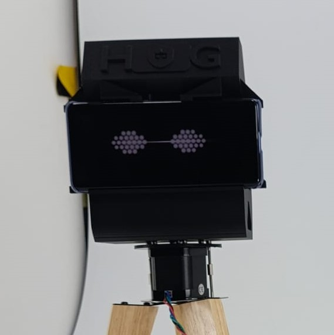

Built at RobotHack
Tech. MVP
What runs today, end to end: a 3D-printed robot head with a phone as its face talks with a patient, every step of the conversation lands in the database within seconds, and the clinic and logistics dashboards show it live. The phone app stands in for the Sovereign Care Gateway: it plays the gateway's role, without the gateway's hardware security.
Roha2212: the hardware
working prototype
1 2 3 4 5- Head3D-printed in PLA, 169 mm wide, with the HG logo, a phone dock with snap latches and access windows for the coupler screws.
- Face: Motorola Edge 60 FusionRuns the HealthGuardians app (Flutter): honeycomb eyes in four modes (idling, speaking, listening, action) and the recorded voice of Roha2212.
- Neck couplerPrinted sleeve and fin on the motor shaft; end stops in the head limit the turn.
- Stepper motorNEMA 17 (17HM19-2004S) on an 80 mm printed mount, turning the head left and right.
- Controller (below the picture)Arduino Due with a RADDS v1.6 board and a TMC2209 driver; an AccelStepper sketch makes calm, randomised head turns with pauses of 2–4.5 s.
Architecture today
MVPRobot
Roha2212
- Phone app: face, voice clips, timed conversation
- Arduino Due + RADDS + TMC2209 → stepper neck (stand-alone)
HTTPS
signed-in account token
signed-in account token
Mock of the Sovereign Care Gateway
App as gateway
- Signs in as the clinic's robot account
- Writes each check-in step as an event
- Keeps up to 50 events while offline
REST
row-level security
row-level security
Database (Supabase / Postgres)
Events & fleet
hg_events: app check-inshg_*tables: fleet, event codes, audit log- Access only through checked functions; read-only jury account
polling
every 3 s
every 3 s
Website (GitHub Pages)
Dashboards
- North Clinic: live Roha2212 events
- Central Clinic: events simulated in the browser
- Logistics: fleet, parts, reliability, audit
No patient names anywhere: each humanoid is linked to an anonymous patient ID that only the clinic can match.
Target architecture
realisable solutionRobots
Open ROS 2 fleet
- Wheeled two-arm robots from several vendors
- Isolated clinic subnet, ROS 2 / VDA 5050
local
ROS 2 topics
ROS 2 topics
Our hardware
Sovereign Care Gateway
- Zero-trust firewall: no traffic to non-EU vendor clouds
- Faces blurred and voices anonymised on site
- mTLS / WireGuard tunnel, signed updates
encrypted,
anonymised
anonymised
EU platform (ISO 27001, BSI C5)
Orchestration
- Workflows across wards, lab, pharmacy
- Step-in teleoperation, fleet health
- HL7/FHIR, nurse call, lifts and doors
role-based
access
access
Clinic and HG staff
Dashboards
- Same views as today, fed by real telemetry
- "Bigger picture" bottleneck analytics
Achieved and the gap
| Part | Achieved in the MVP | Gap to the realisable solution |
|---|---|---|
| Robot body | Printed head, phone face, motorised neck on a tripod | A wheeled two-arm ROS 2 robot from an OEM; our head and face become its interaction layer |
| Motion | Stepper neck with smooth, randomised idle turns | Neck driven by the conversation and the robot controller; homing sensor instead of open-loop steps |
| Conversation | Recorded voice in step with the face modes; one timed demo script | Real dialogue with on-device speech processing, in German and Danish |
| Gateway | The app plays the gateway: it signs in and sends anonymous events | The physical Sovereign Care Gateway: zero trust, edge anonymisation, encrypted EU tunnel, CE/CRA certified |
| Data | Hosted Postgres with row-level security, rate limits, audit log, read-only jury access, timed access end | EU orchestration platform on ISO 27001 / BSI C5 servers with hospital interfaces (HL7/FHIR) |
| Dashboards | Live clinic view, simulated second clinic, logistics view with parts and reliability (mock data) | Real fleet telemetry, predictive maintenance and facility analytics |